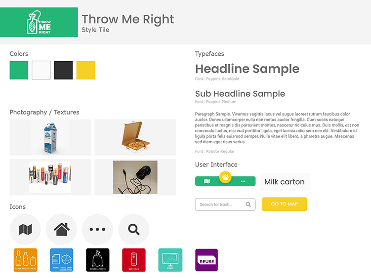
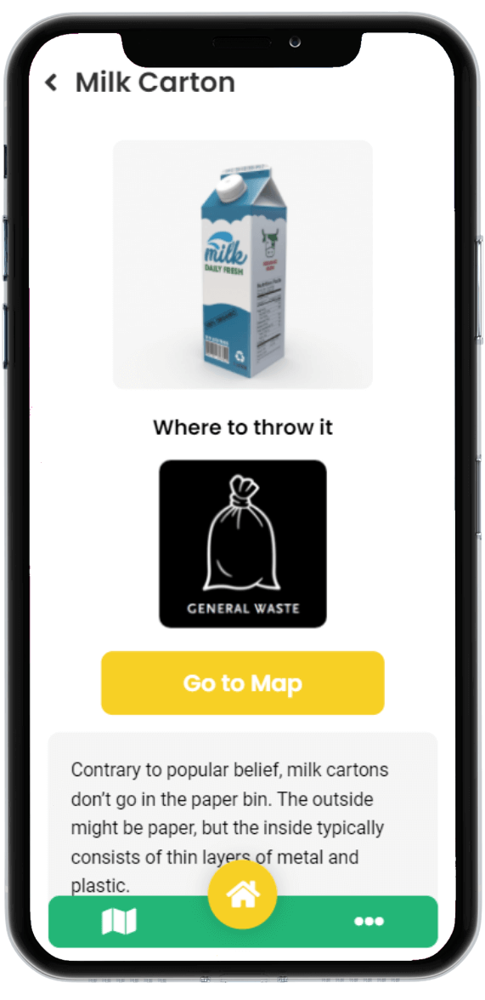
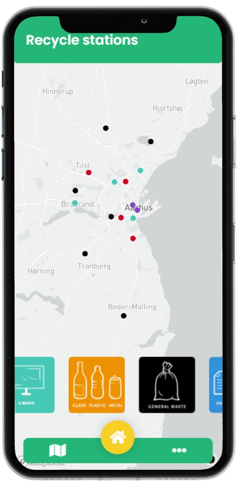

Hi!
I'm Wojciech
Wojciech Dzwończyk and I'm a front-end developer and an interaction designer based in Aarhus
Projects
Throw me right
SPA web app
Salvatio push
Digital prototype

Study Counselling
Web app
My experience
Salvatio Push
Internship
April 2020 - July 2020
- Creating the content for website, events and social media
- Improving website and its performance
- Improving SEO
Idea4me
Internship
Fabruary 2018 - March 2018
- Including SEO
- Writing articles for the company’s blog in order to rank its site in Google search result
GET MY CV
Don't hestitate to contact me!
Throw me right
SPA Web app
Problem
We live in time when global warming and pollution harmfully effects on our planet. Despite the fact that many people try to do their best to decrease this problem, still many of them do not have any idea how to start and how to do this correctly. That's why, me and my group wanted to do a single page application web app which will help them to do first step. The main purpose is showing people how to recycle their trash.
Sketches
After long journey such as research we were able to implement our ideas on paper. Consequently, each member of my group prepared the visualisation of idea about how app should look like. Thanks to that, we could combine our suggestion into one solid product. Let’s move on to the next part of design – wireframes.
Wireframes
Wireframes as a lo-fi digital prototype is a good choice before you'll start doing mockups. It enabled us to make a final decision of how to divide sections and where to place all important elements like buttons, icons, and images.
Style tiles
From the beginning of the project we wanted to hark back to nature and being eco. That's why we chose combination of green and yellow color to highlight essensial information like navigation and headings (green) and call to action button (yellow). Furthermore, to keep our design clear, we used white background. Regading fonts, we used Poppins SemiBold/Bold font for heading and Roboto font for normal text.
Mockups
Mockups as a hi-fi prototype is characterised by preparing digital product as beautiful as it can be with the smallest details.
Firstly, We decided to make a background in white color to keep our app clear, and green on other elements like navigation and headings. Due to our main feature, searching item function, we created yellow button in the center of navigation because we wanted to highlight this function.
When it comes to other elements, after research we know that people would like to gain knowledge about recycling so we decided to add categories section on “main board”. It enables them to get fast access to this section, but what it exactly has? So, you can find there general information about recycling exact item like paper, plastic etc and what you can do with it. Category section also contains items which belong to exact categories.
Furthermore, based on 15 our research we added map where user can check all recycling spot in the city and choose which category are they interested in.
Final product
This is our final solution! Some changes has change since mockups, some not. But overall we are proud of our solution.
 Code
In this project we mostly focused on vanilla JavaScript. We wanted to learn that it's possible to code web app/app only based on JS. Also we needed a place where we would store data that's why we used Firebase. Our main features are searching items option and sending requestes to administration. Moreover, our app is fully working single page application.
Study Counselling
Web app
UX/UI designer, front-end developer
Adobe XD, JavaScript, jQuery, BEM, Sass, Github
Explore the prototype
Problem
The main purpose for this product was creating a solution which will enable new and current students get important infomation in easy and fast way. Client wanted to have a information about school programmes, options for further carrers after AP degree, booking appointments system and more. But the most important fact is that this solution had to be used on devices like tv screen or tablets. As a team, we did our best to combine all requirements and created app for tablets for all users. Our idea was having a tablets in different school's places where students would be able to use for free.
Sketches
Research can be an extremly interesting part of process but let's focus on design part. As usual, everyone in group prepared some simple visualisation for our solution. Subsequently, we combined our ideas into one product.
Wireframes
We put our ideas into lo-fi digital version, wireframes. Becuase it was our first concept, everything had changed later in the process.
Style tiles
Our team for a long time was wondering how to show students that the study counselling place has a welcoming and cosy aproach and no one should be affraid to ask for help. That's why we decided to use warm colors and animated avarat of our client.
Mockups
In mockups we created whole hi-fi digital version of our solution. We know that new students can be stressed and overwhelmed so we decided to keep everything in minimalist, cheerfull and clear style so no one should have problem with using it.
In our solution we created three sections: FAQ, Test, and Calendar. In the first one, user can find answers on the most common question. In Test section user can answer on question related to school programmes and e.g. get information which top up program suits to him the most. The last option is calendar with booking an appointment with workers in Study counselling.
Final product
Now you can see our final product. Compare to mockups we changed some things like colors shades, names of sections to be more specific what they contain and design of those sections. Now we are proude how our solution looks and works.


Code
Coding in group is always challanging. To make it easy we used BEM methodology to be sure that each member of team will write class names in the same way like others. In addition, we focus on jQuery code what enabled us to write scripts in easier and faster way than in vanilla JavaScript (mostly due to our lectures order).
Salvatio Push
Digital prototype
Problem
The Salvatio push company is a start up which helps people in danger. User, in dangerous situation, has to tap 1-3 times the salvatio push''s device which sends information by app in his phone to closest friends. The product is reserved mostly for women, elder people and atheletes. In cooperation with Magda Polakowska, we had to improve current (at this time) design and also create new stuff to mockup.
Style tiles
Before we joined to Salvatio push team, they've had already a logo and visual identity. That's why we decided to use those color in our improved version of digital prototype. The same like in logo we used this gradient as a colors for elements like top bar, navigation and call to action buttons.
Mockups
In mockup we had to show whole process of using this app, starting from creating an account and connecting app with device, finishing on searching people in danger and changing settings. Because not only women are in target group but also elder people we tried to keep layout and main function as simple as possible.
Generally the main page contains information with types of messages and easy access to settings where user can change the text of messages. In navigation user can find options with where can manage close contact, map with people in danger, settings and also user profile. Regarding map, user can check there how many people responded, how muh time it will take him to go to this place and the address.